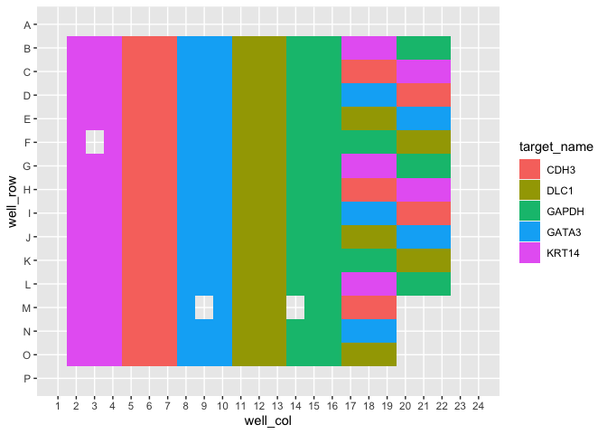

amplify automates routine pcr-based tasks - including plate planning, dilution making, visualizing, and analyzing - so rather than thinking about your experiments themselves, you can think about what your experiments mean.
Installation
You can install this package from GitHub with:
# install.packages("devtools")
devtools::install_github("KaiAragaki/amplify")Tidying qPCR data
Data from the QuantStudio software is exported in a fairly non-standard format:
library(amplify)
library(readxl)
library(knitr)
library(dplyr)
#>
#> Attaching package: 'dplyr'
#> The following objects are masked from 'package:stats':
#>
#> filter, lag
#> The following objects are masked from 'package:base':
#>
#> intersect, setdiff, setequal, union
untidy_file_path <- system.file("extdata", "untidy-pcr-example.xls", package = "amplify")
untidy_file_path |>
read_excel() |>
head() |>
kable()
#> New names:
#> * `` -> ...3
#> * `` -> ...4
#> * `` -> ...5
#> * `` -> ...6
#> * `` -> ...7
#> * ...| Block Type | 384-Well Block | …3 | …4 | …5 | …6 | …7 | …8 | …9 | …10 | …11 | …12 | …13 |
|---|---|---|---|---|---|---|---|---|---|---|---|---|
| Calibration Background is expired | Yes | NA | NA | NA | NA | NA | NA | NA | NA | NA | NA | NA |
| Calibration Background performed on | 01-13-2020 | NA | NA | NA | NA | NA | NA | NA | NA | NA | NA | NA |
| Calibration Normalization FAM-ROX is expired | Yes | NA | NA | NA | NA | NA | NA | NA | NA | NA | NA | NA |
| Calibration Normalization FAM-ROX performed on | 01-13-2020 | NA | NA | NA | NA | NA | NA | NA | NA | NA | NA | NA |
| Calibration Normalization VIC-ROX is expired | Yes | NA | NA | NA | NA | NA | NA | NA | NA | NA | NA | NA |
| Calibration Normalization VIC-ROX performed on | 01-13-2020 | NA | NA | NA | NA | NA | NA | NA | NA | NA | NA | NA |
amplify provides pcr_tidy to automatically tidy these files:
tidy_pcr <- untidy_file_path |>
pcr_tidy()
#> New names:
#> * `` -> ...3
#> * `` -> ...4
#> * `` -> ...5
#> * `` -> ...6
#> * `` -> ...7
#> * ...
#> Warning in mask$eval_all_mutate(quo): NAs introduced by coercion
tidy_pcr |>
head() |>
knitr::kable()| well | well_position | omit | sample_name | target_name | task | reporter | quencher | quantity | quantity_mean | quantity_sd | rq | rq_min | rq_max | ct | ct_mean | ct_sd | delta_ct | delta_ct_mean | delta_ct_se | delta_delta_ct | automatic_ct_threshold | ct_threshold | automatic_baseline | baseline_start | baseline_end | comments | well_row | well_col | analysis_type | control | conf_int | ref_samp | plate_type | exp_type |
|---|---|---|---|---|---|---|---|---|---|---|---|---|---|---|---|---|---|---|---|---|---|---|---|---|---|---|---|---|---|---|---|---|---|---|
| 26 | B2 | FALSE | RD1 | KRT14 | UNKNOWN | FAM | NFQ-MGB | NA | NA | NA | 1 | 0.9316003 | 1.073422 | 29.70135 | 29.74859 | 0.0474225 | NA | 7.8036408424377441 | 0.036815796047449112 | 0 | TRUE | 0.2075911 | TRUE | 3 | 24 | NA | 2 | 2 | Singleplex | GAPDH | 95.0 | RD1 | 384-Well Block | comp |
| 27 | B3 | FALSE | RD1 | KRT14 | UNKNOWN | FAM | NFQ-MGB | NA | NA | NA | 1 | 0.9316003 | 1.073422 | 29.79619 | 29.74859 | 0.0474225 | NA | 7.8036408424377441 | 0.036815796047449112 | 0 | TRUE | 0.2075911 | TRUE | 3 | 23 | NA | 2 | 3 | Singleplex | GAPDH | 95.0 | RD1 | 384-Well Block | comp |
| 28 | B4 | FALSE | RD1 | KRT14 | UNKNOWN | FAM | NFQ-MGB | NA | NA | NA | 1 | 0.9316003 | 1.073422 | 29.74823 | 29.74859 | 0.0474225 | NA | 7.8036408424377441 | 0.036815796047449112 | 0 | TRUE | 0.2075911 | TRUE | 3 | 24 | NA | 2 | 4 | Singleplex | GAPDH | 95.0 | RD1 | 384-Well Block | comp |
| 29 | B5 | FALSE | RD1 | CDH3 | UNKNOWN | FAM | NFQ-MGB | NA | NA | NA | 1 | 0.9305190 | 1.074669 | 28.92050 | 28.89161 | 0.0488189 | NA | 6.946662425994873 | 0.037419259548187256 | 0 | TRUE | 0.5056610 | TRUE | 3 | 23 | NA | 2 | 5 | Singleplex | GAPDH | 95.0 | RD1 | 384-Well Block | comp |
| 30 | B6 | FALSE | RD1 | CDH3 | UNKNOWN | FAM | NFQ-MGB | NA | NA | NA | 1 | 0.9305190 | 1.074669 | 28.91909 | 28.89161 | 0.0488189 | NA | 6.946662425994873 | 0.037419259548187256 | 0 | TRUE | 0.5056610 | TRUE | 3 | 22 | NA | 2 | 6 | Singleplex | GAPDH | 95.0 | RD1 | 384-Well Block | comp |
| 31 | B7 | FALSE | RD1 | CDH3 | UNKNOWN | FAM | NFQ-MGB | NA | NA | NA | 1 | 0.9305190 | 1.074669 | 28.83525 | 28.89161 | 0.0488189 | NA | 6.946662425994873 | 0.037419259548187256 | 0 | TRUE | 0.5056610 | TRUE | 3 | 22 | NA | 2 | 7 | Singleplex | GAPDH | 95.0 | RD1 | 384-Well Block | comp |
This can be done for both *Δ**Δ*Ct qPCR or standard curve qPCR.
Plotting qPCR results
Tidied results can be plotted using pcr_plot
tidy_pcr |>
pcr_plot()
#> Warning: Removed 18 rows containing missing values (position_stack).
Additionally, overviews of plate features can be done using pcr_plate
tidy_pcr |>
pcr_plate_view(target_name)
#> Warning: `guides(<scale> = FALSE)` is deprecated. Please use `guides(<scale> =
#> "none")` instead.
More details can be found in the “Analyzing ddCt qPCR with amplify” vignette.
Library Preparation Quantification
Library Preparation Quantification Calculation
RNA library preparation results output from Quantstudio can be tidied using pcr_tidy:
untidy_lib_path <- system.file("extdata", "untidy-standard-curve.xlsx", package = "amplify")
tidy_lib <- pcr_tidy(untidy_lib_path)
#> New names:
#> * `` -> ...3
#> * `` -> ...4
#> * `` -> ...5
#> * `` -> ...6
#> * `` -> ...7
#> * ...
#> Warning in mask$eval_all_mutate(quo): NAs introduced by coercion
tidy_lib |> head() |> kable()| well | well_position | omit | sample_name | target_name | task | reporter | quencher | ct | ct_mean | ct_sd | quantity | quantity_mean | quantity_sd | automatic_ct_threshold | ct_threshold | automatic_baseline | baseline_start | baseline_end | comments | y_intercept | r2 | slope | efficiency | well_row | well_col | plate_type | exp_type |
|---|---|---|---|---|---|---|---|---|---|---|---|---|---|---|---|---|---|---|---|---|---|---|---|---|---|---|---|
| 1 | A1 | FALSE | NA | Target 1 | STANDARD | FAM | NFQ-MGB | 15.35837 | 15.44140 | 0.0726362 | 6.8000002 | NA | NA | TRUE | 0.2177651 | TRUE | 1 | 40 | NA | 18.223 | 0.9992 | -3.4827 | 93.70175 | 1 | 1 | Fast 96-Well Block (0.1mL) | stan |
| 2 | A2 | FALSE | NA | Target 1 | STANDARD | FAM | NFQ-MGB | 15.47261 | 15.44140 | 0.0726362 | 6.8000002 | NA | NA | TRUE | 0.2177651 | TRUE | 1 | 40 | NA | 18.223 | 0.9992 | -3.4827 | 93.70175 | 1 | 2 | Fast 96-Well Block (0.1mL) | stan |
| 3 | A3 | FALSE | NA | Target 1 | STANDARD | FAM | NFQ-MGB | 15.49321 | 15.44140 | 0.0726362 | 6.8000002 | NA | NA | TRUE | 0.2177651 | TRUE | 1 | 40 | NA | 18.223 | 0.9992 | -3.4827 | 93.70175 | 1 | 3 | Fast 96-Well Block (0.1mL) | stan |
| 5 | A5 | FALSE | Sample 1 | Target 1 | UNKNOWN | FAM | NFQ-MGB | 18.96735 | 18.99822 | 0.0436533 | 0.6113234 | 0.5990987 | 0.0172884 | TRUE | 0.2177651 | TRUE | 1 | 40 | NA | 18.223 | 0.9992 | -3.4827 | 93.70175 | 1 | 5 | Fast 96-Well Block (0.1mL) | stan |
| 6 | A6 | FALSE | Sample 1 | Target 1 | UNKNOWN | FAM | NFQ-MGB | 19.02909 | 18.99822 | 0.0436533 | 0.5868739 | 0.5990987 | 0.0172884 | TRUE | 0.2177651 | TRUE | 1 | 40 | NA | 18.223 | 0.9992 | -3.4827 | 93.70175 | 1 | 6 | Fast 96-Well Block (0.1mL) | stan |
| 8 | A8 | FALSE | Sample 9 | Target 1 | UNKNOWN | FAM | NFQ-MGB | 17.92027 | 17.92443 | 0.0058898 | 1.2215880 | 1.2182336 | 0.0047438 | TRUE | 0.2177651 | TRUE | 1 | 40 | NA | 18.223 | 0.9992 | -3.4827 | 93.70175 | 1 | 8 | Fast 96-Well Block (0.1mL) | stan |
Calculating the concentration of library can be performed using pcr_lib_calc:
calc_lib <- tidy_lib |>
pcr_lib_calc()
calc_lib |> select(task, sample_name, concentration) |> head() |> kable()| task | sample_name | concentration |
|---|---|---|
| STANDARD | NA | NA |
| STANDARD | NA | NA |
| STANDARD | NA | NA |
| UNKNOWN | Sample 6 | 2039.379 |
| UNKNOWN | Sample 6 | 2039.379 |
| UNKNOWN | Sample 6 | 2039.379 |
Library preparation quantification quality control
We can generate useful plots to determine the quality of the quantification run by first using pcr_lib_qc:
qc <- calc_lib |>
pcr_lib_qc()
qc
#> $standards
#> # A tibble: 13 × 8
#> # Groups: task [1]
#> task quantity quant_actual dil slope efficiency r2 ct
#> <chr> <dbl> <dbl> <dbl> <dbl> <dbl> <dbl> <dbl>
#> 1 STANDARD 6.80 6.8 0 -3.48 93.7 0.999 15.4
#> 2 STANDARD 6.80 6.8 0 -3.48 93.7 0.999 15.5
#> 3 STANDARD 6.80 6.8 0 -3.48 93.7 0.999 15.5
#> 4 STANDARD 0.680 0.734 9.27 -3.48 93.7 0.999 18.7
#> 5 STANDARD 0.680 0.734 9.27 -3.48 93.7 0.999 18.6
#> 6 STANDARD 0.0680 0.0603 12.2 -3.48 93.7 0.999 22.3
#> 7 STANDARD 0.0680 0.0603 12.2 -3.48 93.7 0.999 22.2
#> 8 STANDARD 0.0680 0.0603 12.2 -3.48 93.7 0.999 22.3
#> 9 STANDARD 0.00680 0.00568 10.6 -3.48 93.7 0.999 25.7
#> 10 STANDARD 0.00680 0.00568 10.6 -3.48 93.7 0.999 25.6
#> 11 STANDARD 0.00680 0.00568 10.6 -3.48 93.7 0.999 25.7
#> 12 STANDARD 0.000680 0.000417 13.6 -3.48 93.7 0.999 29.4
#> 13 STANDARD 0.000680 0.000417 13.6 -3.48 93.7 0.999 29.4
#>
#> $samples
#> # A tibble: 42 × 10
#> # Groups: task [1]
#> task sample_name quantity_mean concentration quantity quant_actual slope
#> <chr> <chr> <dbl> <dbl> <dbl> <dbl> <dbl>
#> 1 UNKNOWN Sample 6 2.04 2039. 2.06 2.06 -3.48
#> 2 UNKNOWN Sample 6 2.04 2039. 2.12 2.12 -3.48
#> 3 UNKNOWN Sample 6 2.04 2039. 1.94 1.94 -3.48
#> 4 UNKNOWN Sample 12 1.89 1893. 1.93 1.93 -3.48
#> 5 UNKNOWN Sample 12 1.89 1893. 1.88 1.88 -3.48
#> 6 UNKNOWN Sample 12 1.89 1893. 1.87 1.87 -3.48
#> 7 UNKNOWN Sample 4 1.69 1694. 1.62 1.62 -3.48
#> 8 UNKNOWN Sample 4 1.69 1694. 1.84 1.84 -3.48
#> 9 UNKNOWN Sample 4 1.69 1694. 1.62 1.62 -3.48
#> 10 UNKNOWN Sample 16 1.49 1493. 1.46 1.46 -3.48
#> # … with 32 more rows, and 3 more variables: efficiency <dbl>, r2 <dbl>,
#> # ct <dbl>
#>
#> $sample_summary
#> # A tibble: 16 × 3
#> sample_name quantity_mean concentration_mean
#> <chr> <dbl> <dbl>
#> 1 Sample 1 0.599 599.
#> 2 Sample 10 1.07 1066.
#> 3 Sample 11 1.03 1031.
#> 4 Sample 12 1.89 1893.
#> 5 Sample 13 0.583 583.
#> 6 Sample 14 1.22 1216.
#> 7 Sample 15 0.713 713.
#> 8 Sample 16 1.49 1493.
#> 9 Sample 2 1.05 1052.
#> 10 Sample 3 1.37 1367.
#> 11 Sample 4 1.69 1694.
#> 12 Sample 5 0.903 903.
#> 13 Sample 6 2.04 2039.
#> 14 Sample 7 1.13 1132.
#> 15 Sample 8 1.09 1088.
#> 16 Sample 9 1.22 1218.
#>
#> $standard_summary
#> # A tibble: 10 × 4
#> quantity dil name value
#> <dbl> <dbl> <chr> <dbl>
#> 1 0.000680 13.6 quantity_mean 0.000680
#> 2 0.000680 13.6 quant_actual 0.000417
#> 3 0.00680 10.6 quantity_mean 0.00680
#> 4 0.00680 10.6 quant_actual 0.00568
#> 5 0.0680 12.2 quantity_mean 0.0680
#> 6 0.0680 12.2 quant_actual 0.0603
#> 7 0.680 9.27 quantity_mean 0.680
#> 8 0.680 9.27 quant_actual 0.734
#> 9 6.80 0 quantity_mean 6.80
#> 10 6.80 0 quant_actual 6.8
#>
#> $outliers
#> # A tibble: 58 × 17
#> # Groups: sample_name [22]
#> task sample_name quantity_mean dil slope efficiency r2 ct quantity
#> <chr> <chr> <dbl> <dbl> <dbl> <dbl> <dbl> <dbl> <dbl>
#> 1 STANDARD 1 NA 0 -3.48 93.7 0.999 15.4 6.80
#> 2 STANDARD 1 NA 0 -3.48 93.7 0.999 15.5 6.80
#> 3 STANDARD 1 NA 0 -3.48 93.7 0.999 15.5 6.80
#> 4 UNKNOWN Sample 6 2.04 NA -3.48 93.7 0.999 17.1 2.06
#> 5 UNKNOWN Sample 6 2.04 NA -3.48 93.7 0.999 17.1 2.12
#> 6 UNKNOWN Sample 6 2.04 NA -3.48 93.7 0.999 17.2 1.94
#> 7 UNKNOWN Sample 12 1.89 NA -3.48 93.7 0.999 17.2 1.93
#> 8 UNKNOWN Sample 12 1.89 NA -3.48 93.7 0.999 17.3 1.88
#> 9 UNKNOWN Sample 12 1.89 NA -3.48 93.7 0.999 17.3 1.87
#> 10 UNKNOWN Sample 4 1.69 NA -3.48 93.7 0.999 17.5 1.62
#> # … with 48 more rows, and 8 more variables: quant_actual <dbl>,
#> # concentration <dbl>, no_po_mean <dbl>, no_po_sd <dbl>, keep <lgl>,
#> # adj_mean <dbl>, adj_sd <dbl>, z <dbl>These data, by themselves, are not particularly useful. However, they can be used for more elucidative downstream analyses like pcr_qc_report
# Generates a file - not run
# qc |> pcr_lib_qc_report()